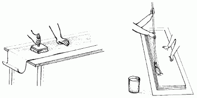
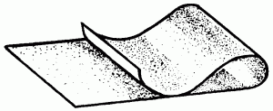
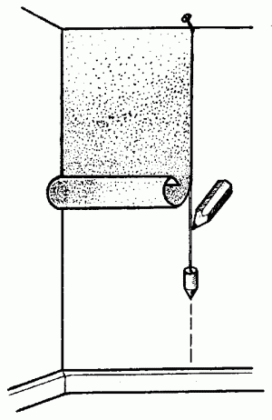
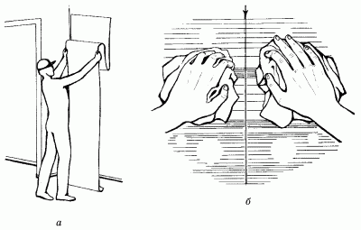
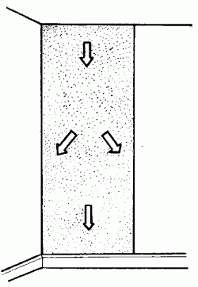
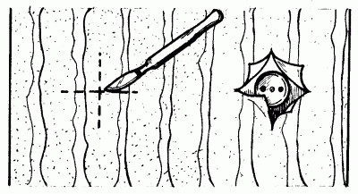
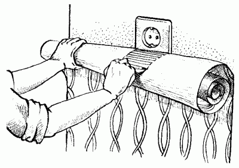
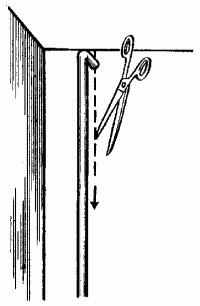

Подготовка обоев.

После подготовки поверхностей приступают к подготовке материалов для оклеивания стен. Безусловно, перед походом в магазин хозяин квартиры неоднократно задумается над вопросом, сколько же рулонов обоев придется купить. Ответ на него прежде всего зависит от площади самой комнаты. Например, вам предстоит оклеить обоями комнату 4 х 3 м. Сначала нужно определить периметр комнаты:
(4+3) х 2 = 14 м.
Затем следует разделить полученный периметр на ширину обоев, например 0,5 м:
14: 0,5 = 28.
Это и есть искомое число, то есть именно столько полотнищ обоев понадобится для оклейки комнаты. В одном рулоне может быть около 10 м обоев, а значит, его хватит на три полотнища. Теперь узнаем количество рулонов обоев, необходимых для оклеивания одной комнаты:
28: 3 = 9,3 рулона.
Обычно рекомендуется покупать на один рулон больше: необходим небольшой запас на случай экстренного ремонта (вдруг ваш маленький ребенок задумает оставить на новых обоях памятный рисунок или кошка выберет их в качестве лучшего материала для затачивания когтей и т. п.). Имея в своем распоряжении запасной рулон обоев, вы сможете заменить только один поврежденный участок, а не переклеивать заново все стены. К тому же при расчете числа приобретаемых рулонов следует вычесть из общего количества обоев суммарную площадь окон и дверей.
Далее обои нужно подготовить к наклеиванию на стены. Состоит эта процедура в следующем: у обоев обрезают одну или две кромки, причем кромку срезают строго по имеющейся линии, и разрезают рулоны на отдельные полотнища.
Обои наклеивают либо встык, либо внахлест. Первый способ рекомендуется в случае, когда работать приходится с обоями среднего и высшего качества, а тонкие обои обычно наклеивают внахлест. В этом случае кромку накладываемого полотна следует обращать к свету, для того чтобы тень, падающая от шва, не подчеркивала линию стыка. Таким образом, если оклеивается стена по правую сторону от окна, следует обрезать левую кромку, а если оклеивается стена с левой стороны от окна, то правую кромку.
После того как первое полотнище будет готово, можно приступать к обработке второго. В данном случае следует проявить максимальную аккуратность, ведь теперь нужно предварительно совместить части рисунка обоев, чтобы на стене он был цельным. При отрезании полотнищ от рулона придется оставлять на всякий случай небольшой (2–2,5 см) запас по высоте стены: иногда бывает так, что в одном помещении высота стен неодинакова, к тому же в процессе наклеивания обои дают небольшую усадку. В любом случае излишек всегда лучше, чем нехватка – это станет понятным в процессе работы. А излишнюю часть полотнища обоев, оставшуюся над полом, в конце работы можно аккуратно обрезать специальным ножом со сменными лезвиями.
Нарезанные полотнища обоев следует уложить лицевой стороной к полу (кстати, неплохо предварительно за-стелить его старыми газетами или полиэтиленовой пленкой для защиты от загрязнения клеем), причем боковая кромка каждого следующего полотна должна выступать в сторону примерно на 2 см – это делается для того, чтобы не испачкать клеем лицевую сторону обоев. После этого с помощью валика (или маховой кисти, если ею будет удобнее работать) на тыльную сторону полотна наносится клей (рис. 20).

Рис. 20. Нанесение клея на обои.
При наклеивании нужно учесть, что тонкие бумажные обои промазываются клеем только один раз, а более плотные – два раза.
После нанесения клея обои складывают так, как это показано на рис. 21, точно совместив при этом края полотнища клеевой стороной внутрь. Затем сложенное таким образом полотнище снова складывают, перемещая оба его края на середину. Тонкие обои нужно оставить в таком положении на 15 минут, а плотные – на 25 минут.

Рис. 21. Складывание обойного полотнища для пропитки клеем.
Обои следует наклеивать начиная со стороны окна, а затем постепенно переходя в глубь помещения.
Процесс наклеивания обоев происходит в следующем порядке: взяв сложенное полотнище за края, отгибают его верхнюю часть и прикладывают к верхней горизонтали того угла стены, от которого предполагается начать оклеивание. С помощью отвеса определяется строго вертикальная линия, по которой должно быть выровнено первое полотнище (рис. 22). Если стены в помещении недостаточно ровные, желательно наметить эту вертикальную черту карандашом, проведя им вдоль линии отвеса.

Рис. 22. Определение вертикального положения полотнища обоев с помощью отвеса.
После того как к стене будет прикреплена верхняя часть полотнища, нужно аккуратно провести по поверхности обоев мягкой тряпкой до линии сгиба полотнища. Затем, отогнув нижнюю половину полотна, следует так же провести тряпкой по вертикали, выравнивая обои до самого плинтуса и не забывая сразу же разглаживать морщины и вздутия, появляющиеся в процессе работы (рис. 23).

Рис. 23. Наклеивание обоев: а – складывание обойного полотнища; б – разглаживание.
Затем, вернувшись к верхней части полотнища, нужно разгладить его тряпкой по направлениям, которые указаны на рис. 24.

Рис. 24. Направление разглаживающих движений тряпкой или мягкой щеткой.
Иногда тряпкой пользоваться даже удобнее, чем щеткой, в особенности если на стыках появляются излишки клеящего вещества.
Работа несколько осложнится, если на стене есть выключатели и розетки. В таком случае нужно будет вырезать отверстия для них в полотнах обоев. Можно, конечно же, сделать это заранее, до того как полотнища будут промазаны слоем клейстера, тщательно вымерив место расположения этих отверстий и затем наметив его на внутренней стороне обоев простым карандашом. Однако в данном случае нет полной гарантии, что отверстия в обоях идеально совпадут с отверстиями на стене, чаще всего бывает как раз наоборот. Для большей точности работы (хотя это, конечно же, несколько неудобно) желательно вырезать отверстия в полотнищах, когда они уже наклеиваются непосредственно на стену.
Для этого следует наклеить полотнище на стену так, как это указано выше, затем, определив расположение отверстий для розеток и выключателей на ощупь, острым ножом со сменными лезвиями сделать аккуратные разрезы в виде креста таким образом, как это показано на рис. 25. Затем нужно отогнуть разрезанные края обоев и обрезать каждый. Теперь можно устанавливать розетки и выключатели.

Рис. 25. Вырезание отверстий под розетки.
Иногда бывает так, что по каким-то причинам невозможно снять розетки и выключатели. В этом случае можно поступить следующим образом: взять сухое полотнище и состыковать его по рисунку с ранее наклеенным, обозначив карандашом места для розеток и выключателей (рис. 26). После этого снять полотнище со стены, вырезать намеченные отверстия, затем намазать обои клейстером и наклеить на стену.

Рис. 26. Вырезание отверстий под розетки.
Для наклеивания обоев за вертикально расположенными трубами парового отопления полотнища обоев (после проведения необходимых измерений) нужно разрезать по вертикали, чтобы линия шва приходилась на участок стены позади трубы и была незаметной (рис. 27).

Рис. 27. Разрезание полотнища под вертикально расположенной трубой.
Без сомнения, при наклеивании обоев работать вдвоем гораздо удобнее и быстрее, чем в одиночку. Если проведением этой работы занимается один человек, то ему нужно будет постоянно спускаться на пол за новыми полотнищами и снова подниматься наверх, приклеивать обои в верхней части стены, а затем, разгладив их, приклеивать часть полотнища внизу. После этого придется в одиночку разглаживать каждое полотнище от середины с переходом к краям.
Если же наклеиванием обоев заняты двое, то в таком случае нет нужды периодически спускаться с табурета (или со стремянки, если в комнате очень высокие потолки). Человек, работающий внизу, промазывает обои, складывает их и подает своему напарнику, который занят непосредственно оклейкой стен. Он же берет сложенное полотнище обоев за один край и, поднеся к стене, постепенно опускает его. Таким образом полотнище выпрямляется. Работающий внизу прикладывает боковой срез нового полотнища к ранее отбитой вертикальной линии или кромке уже наклеенного полотнища, а напарник в это время прижимает верхнюю часть обоев к стене, после чего оба начинают аккуратно разглаживать обои.
Несколько слов о разглаживании полотнищ. Если для отделки стен используются обои невысокого качества, то разглаживать их следует очень осторожно, чтобы не размазать краску на обоях. Лучше всего в этом случае проводить разглаживание через лист белой бумаги. Ни в коем случае не следует применять для этой цели газету, которая может оставить отпечатки типографской краски на стене.
Плотные обои обычно наклеивают встык, для чего потребуется срезать кромки с боковых сторон полотнищ. Для этого крайне нежелательно использовать ножницы, как бы остры они ни были; лучше всего подойдет нож со сменными лезвиями. Обрезание кромок следует производить по рейке необходимой длины, приложив ее к боковому краю обойного полотнища.
Во время работы следует соблюдать определенные условия. Нельзя, например, открывать окна и двери во избежание появления сквозняков; пока обои полностью не просохли, помещение не должно проветриваться, даже в летнее время. В течение 2–3 дней после наклеивания нельзя подвергать обои воздействию солнечных лучей, необходимо закрыть окна шторами. Несмотря на то что под воздействием яркого солнечного света высыхание происходит быстрее, нет гарантии, что рисунок на отдельных участках обоев не выцветет.
В период высыхания обоев температура воздуха в помещении не должна превышать 23° С. Иногда для того, чтобы ускорить процесс высыхания, используют различные нагревательные приборы, однако делать этого ни в коем случае нельзя. Под действием повышенной температуры обои могут покоробиться, вздуться и отойти от стены. Включать электронагревательные приборы в этом помещении можно не раньше чем через сутки (в теплое время года) или трое суток (в холодное время года) после наклеивания обоев.